About Me
Hi, I’m Husayn. I’m a Senior Data Scientist and Georgia Tech Ph.D. with over ten years of experience working with machine learning, geospatial analytics, and complex real world data. I enjoy taking messy information and turning it into insights that help people make better decisions.
My work spans remote sensing, environmental analytics, and applied AI, backed by models, pipelines, and dashboards I’ve built for researchers, engineers, and operational teams. I also mentor students and early career professionals who are developing their skills in data science and programming.
Grounded in civil engineering and hydrology, I bring a practical way of understanding complex systems, and that foundation still shapes how I approach data and problem solving. I now apply these skills across a wider range of fields where careful analysis can support meaningful, evidence based improvements in science, technology, and public health.
Skills
Certifications


Portfolio
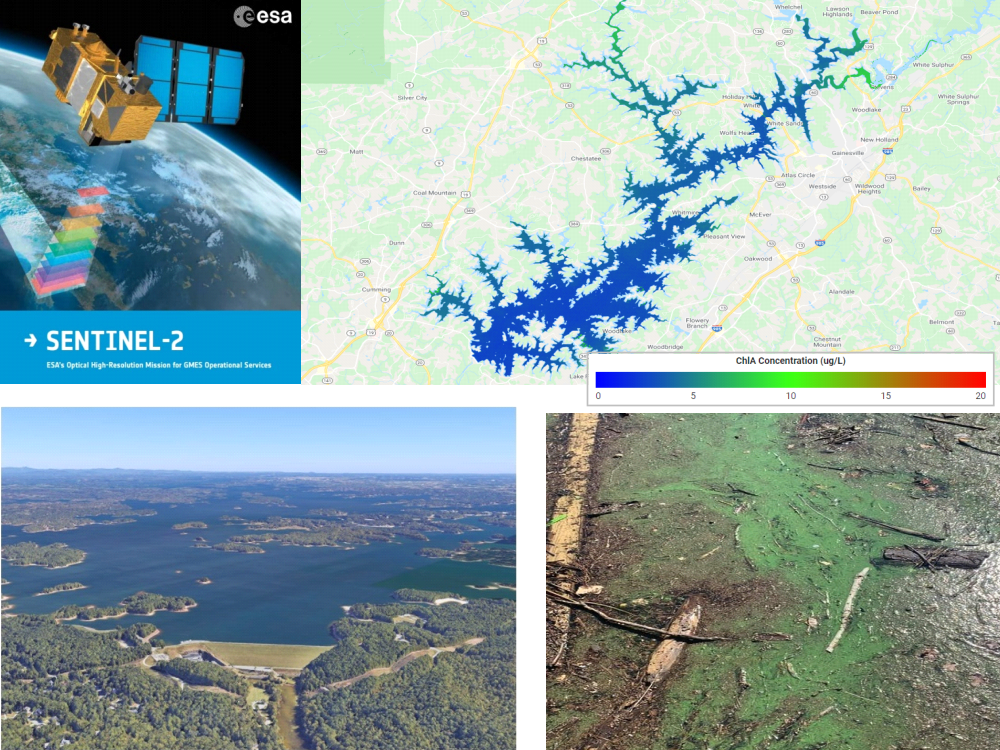
Remote Sensing & ML for Water Quality Assessment at Lake Lanier
Satellite-based ML workflow to monitor chlorophyll-a and assess water quality compliance for Lake Lanier.
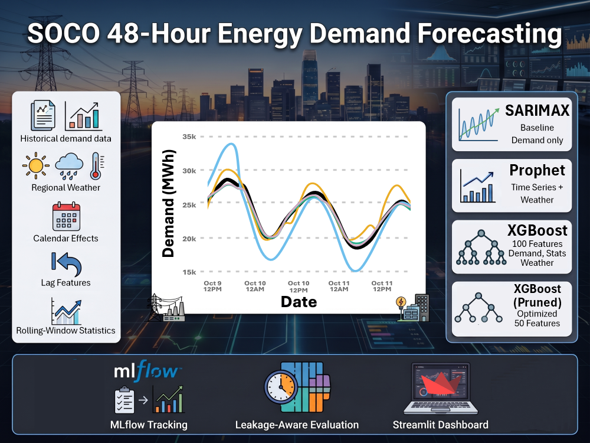
SOCO 48-Hour Energy Demand Forecasting
End-to-end ML pipeline for forecasting hourly electricity demand using 10+ years of grid and weather data, achieving high-accuracy 48 hour load predictions.

Autodesk Agentic RAG Chatbot
Evidence-grounded assistant for Autodesk product and workflow questions using hybrid retrieval, web verification, reranking, and evaluation.
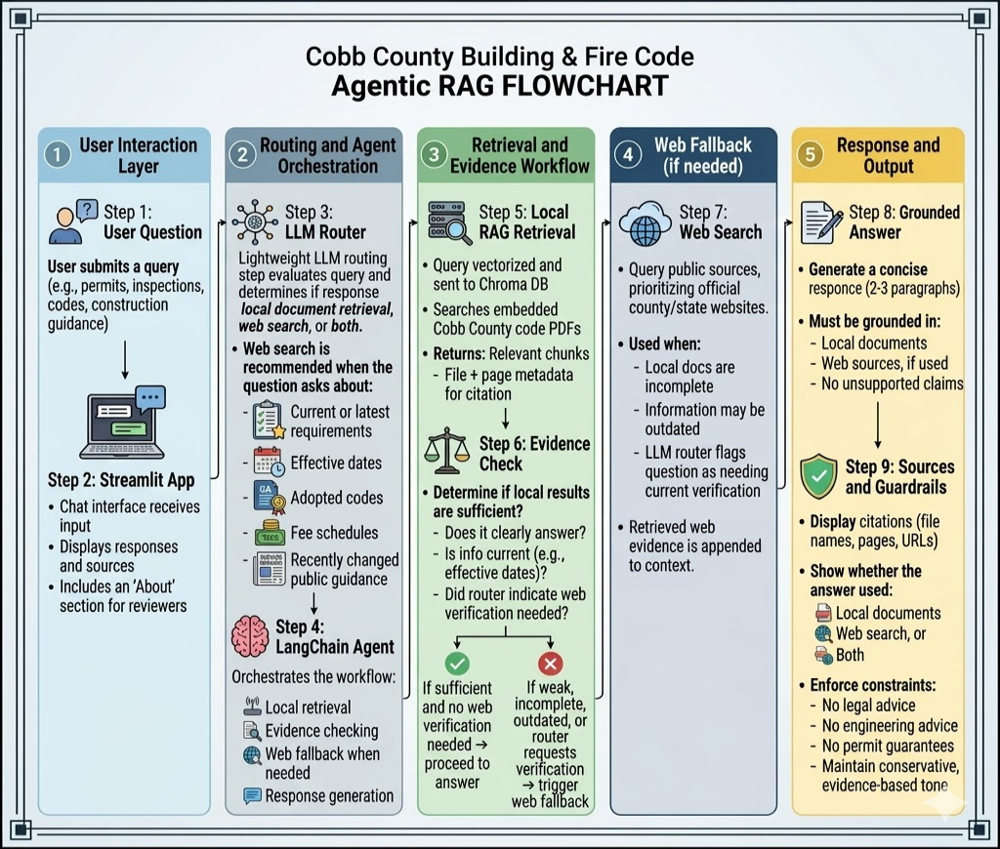
Cobb County Building & Fire Code Agentic RAG Assistant
RAG-powered assistant for querying and retrieving information from Cobb County building and fire codes.
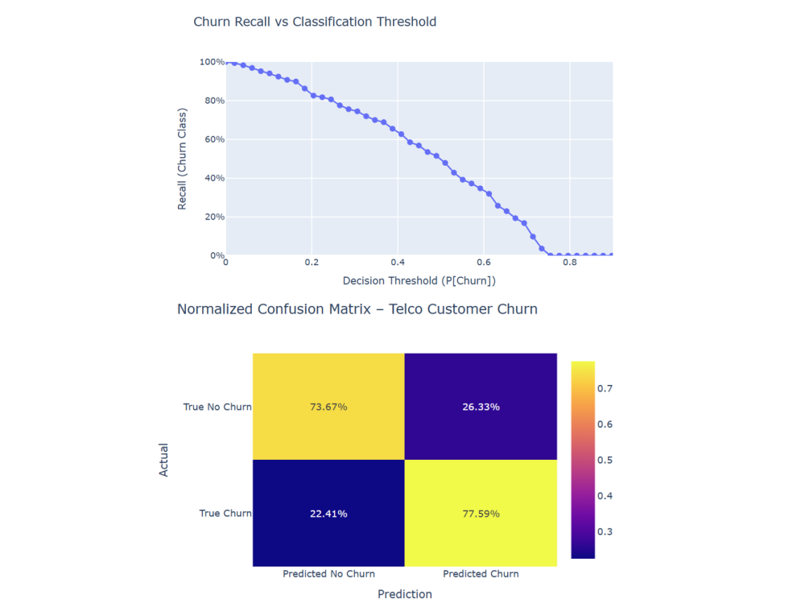
Customer Churn Modeling & Retention Optimization with SparkML, MLflow, & Neural Networks
Developed scalable churn prediction models and experiment tracking to inform retention strategies.
AI-Automated Lead Generation Pipeline for Engineering Consultancy (RAG + Web Data)
RAG-powered pipeline to mine regulatory and web data, rank prospects, and surface qualified engineering leads.
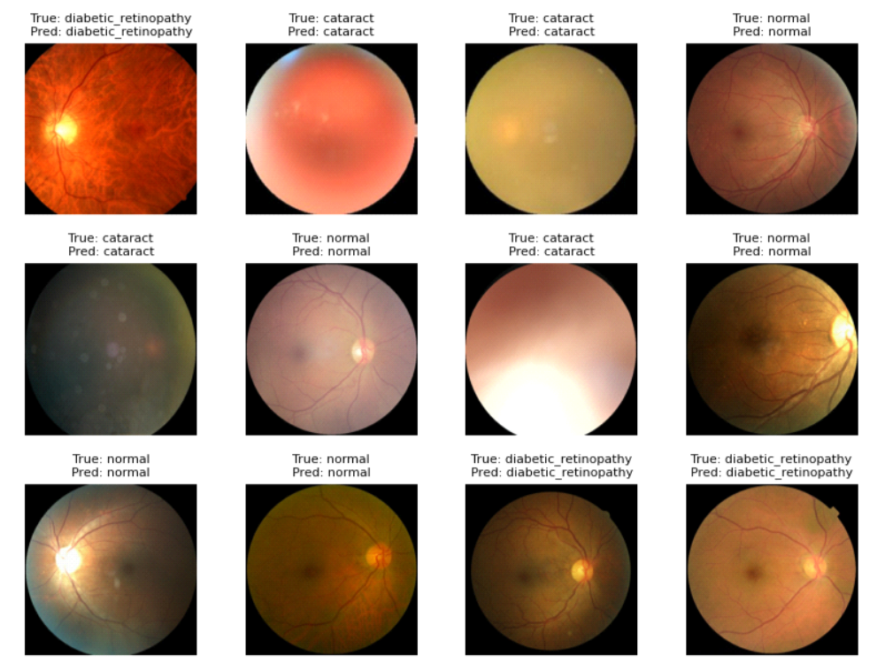
AI-Powered Retinal Disease Detection with Deep Learning & Computer Vision Pipeline
TensorFlow-based CNN that classifies retinal images into disease categories to support early detection.

Multi-Agent LLM System for Automated Scientific Literature Review
Full-stack research automation app that searches Scopus, verifies DOIs, saves papers to Zotero, and exports cited review documents.
Voice-AI Customer Service Agent for Medical Lab Appointments
Voice AI system to automate medical lab appointment scheduling, rescheduling, and support calls.
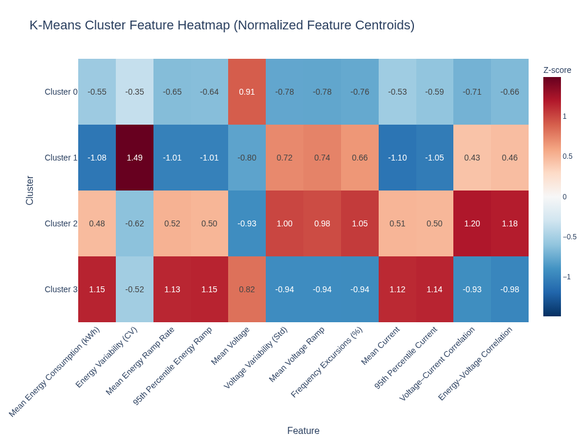
Unsupervised Risk Modeling with K-Means on AMI Smart Meter Data
Segmented smart meters using k-means clustering on high-frequency AMI power-quality data to identify behavioral patterns linked to grid reliability and outage risk.
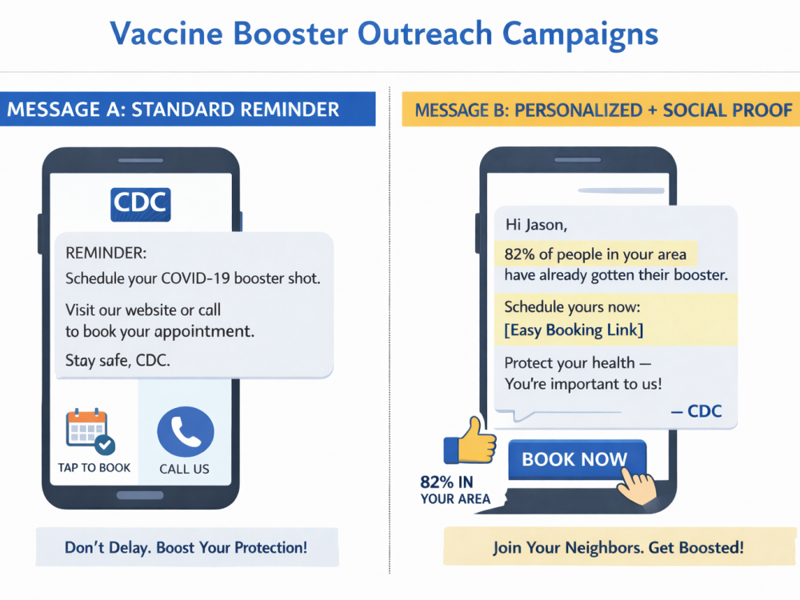
Public Health A/B Testing & Predictive Analytics (XGBoost)
Application of A/B testing and machine learning (XGBoost) to measure message impact and target individuals most likely to schedule appointments, with SHAP-based explainability.
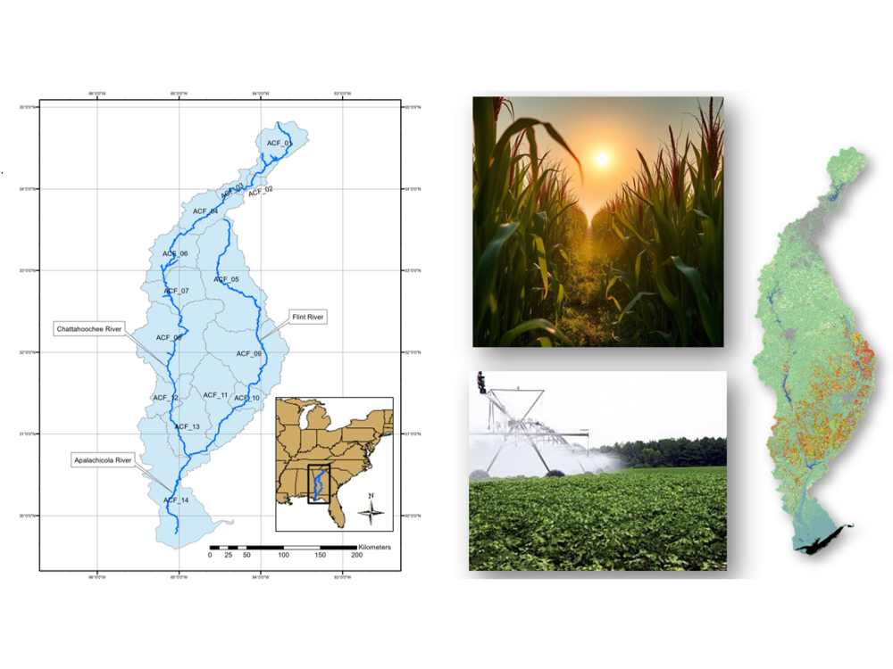
Climate-Informed Crop Yield & Irrigation Projections for the ACF River Basin
Modeled climate-adjusted crop yields and irrigation demand to support long-term agricultural and water planning.
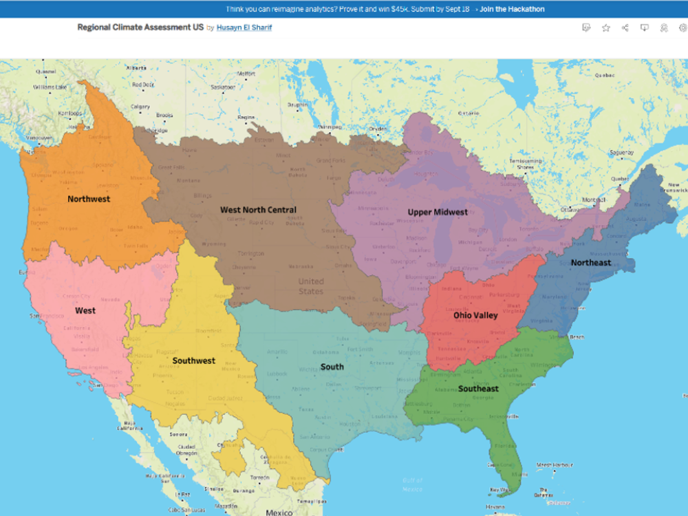
Continental-Scale Climate Bias-Correction, Projection, & Interactive Dashboard
Built bias-corrected climate projections and an interactive dashboard to explore multi-model climate futures.
Professional Experience
Senior Data Scientist (Part-Time)
- Developed a property lead-scoring pipeline using weather, permit, valuation, and geospatial data; outperformed a heuristic baseline with logistic regression/XGBoost, identifying a projected 12% revenue lift (~$450K per 600 leads) and 3.3x higher PR-AUC. Added Platt scaling and SHAP for explainable, per-lead insights.
- Built an explainable RAG platform to match project requirements with qualified engineering firms, indexing 7K+ public profiles into ~70K retrieval documents using PostgreSQL/pgvector, embeddings, hybrid search, RRF, and cross-encoder reranking.
- Built an AI-powered lead enrichment pipeline (Python, Google Gemini, Google Places API) to surface high-value industrial prospects for an engineering consultancy, replacing manual prospecting with a scored outreach list and accelerating lead qualification.
Senior Data Scientist (Research Engineer)
- Built Dockerized environments for geospatial ML workflows supporting reproducible deployment of satellite-based environmental monitoring pipelines.
- Developed ML models integrating soil, crop, and climate data to predict crop yield and irrigation demand, enabling data-driven water resource planning and quantifying long-term risks to agricultural production in the Apalachicola-Chattahoochee-Flint River Basin.
- Oversaw $400K+ in annual federal and state research funding as Assistant Director of the Georgia Water Resources Institute.
- Mentored graduate researchers in data science and ML methods, supporting publications and conference presentations.
Engineering Consultant (Part-Time)
- Developed physics and data-driven system models and AI-Ops pipelines for real-time AWS IoT sensor analytics, improving engineering efficiency and reducing time-to-market by 20%.
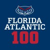
Data Scientist (Graduate Research Assistant)
- Built and validated ML models to reconstruct missing environmental data, improving accuracy and spatial consistency for hydrologic and climate analyses.
Education
Ph.D., Civil Engineering
Master of Science, Civil Engineering
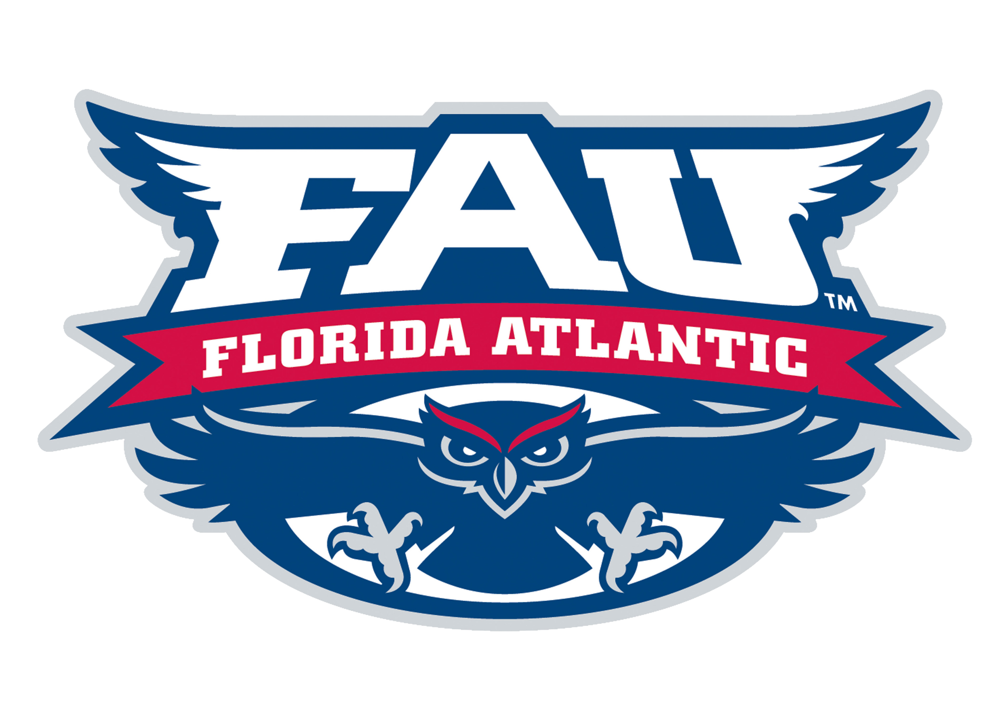
Bachelor of Science, Civil Engineering
Contact
Interested in collaborating or discussing a project? Send me a message and I’ll get back to you.